Maho
Introduction
Maho can be learned by bushi and courtiers alike (although the act of doing so is largely forbidden), and can be used regardless of one's Insight rank. However, they require for blood to be spilled by the caster or a willing or helpless being. The amount of blood spilled is equal to twice the spell's Mastery level. Conversely, the caster may spill additional blood in order to gain Raises : one Raise per increment of double the spell's Mastery level in spilt blood. As an additional drawback, the caster gains points of Shadowlands Taint equal to one less than the spell's Mastery Level (with a minimum of 1).
Mastery Level 1
Bleeding | 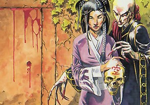 |
| Ring/Mastery | Fire 1 |
| Range | 50' |
| Area of Effect | One target person/creature |
| Duration | Indefinite |
| Raises | Damage (+1 Wound of bleeding per Raise), Targets (+1 target per Raise) |
| Description | This spell inflicts a malignant kansen on a wounded person. The target of the spell must be already injured (suffering from at least 1 Wound) in order for this spell to be effective. The spell causes the injury to begin bleeding, inflicting 1 Wound per Round at the start of the victim’s Turn. This effect continues every Round, indefinitely, unless the injury is bandaged with a successful Medicine (Wound Treatment) / Intelligence roll at TN 20. Magically healing the target to full Wounds will also end the bleeding. |
Blood Rite | 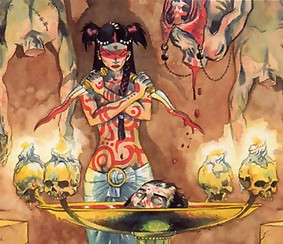 |
| Ring/Mastery | Earth 1 |
| Range | Touch |
| Area of Effect | One target person/creature |
| Duration | 10 minutes |
| Raises | Duration (+2 minutes per Raise), Special (heals an extra +1k0 per Raise) |
| Description | A deceptive spell which allows many maho-tsukai to masquerade as noble priests, healing the injured. This spell convinces the kansen to flow into the target, stimulating his flesh to heal and knit itself closed, and stimulating his body to feats of physical prowess. The target immediately heals 1k1 Wounds, and for the duration of the spell one of his physical Traits (chosen by the caster) is treated as one Rank higher. (This can award a temporary increase in Wounds if it causes the target’s Earth Ring to increase, but the Wounds will drop back to normal when the spell expires, and this may result in the death of the target if he has taken sufficient injury.) However, there is a cruel price for this assistance from the kansen: the target of the spell immediately gains 1k1 points of Shadowlands Taint. |
Blood and Darkness | 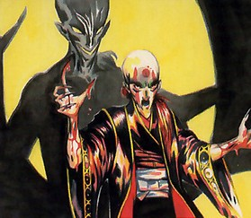 |
| Ring/Mastery | Air 1 |
| Range | Centered on caster |
| Area of Effect | 30’ radius |
| Duration | 10 rounds |
| Raises | Area (5’ additional radius per Raise), Duration (+2 rounds per Raise) |
| Description | This spell plunges the air around the caster into an unnatural visual obscurement, either pitch black or dark blood red as the caster desires, as the kansen literally block the vision of everyone in the area of effect. Everyone who enters or remains within the spell’s area of effect, except for the caster, is considered to be Blind until they move out of the area of effect. The caster can see normally : the kansen recognize their master and do not block his vision. The zone of obscurement does not move once it is created. Magical effects or Shadowlands powers that overcome blindness can see through the obfuscation, but otherwise there is no way to overcome the effect until the spell expires. |
Disrupt the Limb
| Ring/Mastery | Water 1 |
| Range | 50’ |
| Area of Effect | One target person’s limb |
| Duration | 10 rounds |
| Raises | Duration (+2 rounds per Raise), Range (+10’ per Raise) |
| Description | This curse causes the muscles of a target limb (an arm or leg of the caster’s choice) to be afflicted with pain, weakness, and tremors for the duration of the spell. All rolls for physical actions taken with that limb for the duration of the spell suffer a +15 TN penalty. In addition, if the target limb is a leg, the victim is considered to be under the effects of the Lame Disadvantage for the duration of the spell. |
Inspire Fear
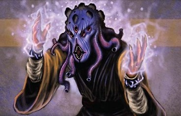 | |
| Ring/Mastery | Air 1 |
| Range | 50’ |
| Area of Effect | One target person |
| Duration | 1 hour |
| Raises | Duration (+10 minutes per Raise), Range (+10’ per Raise), Targets (+1 target per Raise) |
| Description | This maho spell causes the target person to gain a Phobia of the caster’s choice. For the duration of the spell, the victim is considered to have a 3-Point Phobia (as per the Disadvantage) of a nature chosen by the caster. Mahotsukai frequently use this spell to make their victims afraid of their weapons or allies, to make shugenja afraid of their spell-scrolls, and other cruel tricks. |
Legacy of the Dark One
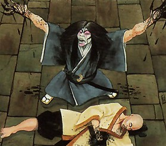 | |
| Ring/Mastery | Air 1 |
| Range | 100’ |
| Area of Effect | One target person/creature |
| Duration | 5 rounds |
| Raises | Duration (+1 round per Raise), Targets (+1 target per Raise), Special (1 additional Void point per 2 Raises) |
| Description | This subtle maho spell causes distracting kansen to cluster around the target, disrupting his connection to the true Void. The target immediately loses one Void point, and cannot regain it for the duration of the spell. |
Sinful Dreams
| Ring/Mastery | Air 1 |
| Range | 300’ |
| Area of Effect | One target intelligent creature |
| Duration | 1 hour |
| Raises | Range (+50’ per Raise), Special (1 additional Free Raise awarded per 2 Raises) |
| Description | This subtle and sinister spell causes the target to experience dreams of committing dark, sinful, and dishonorable acts. It can only be cast on a person who is either sleeping or in a situation where they could easily fall asleep (resting, meditating, etc). The caster need not know exactly where the target is located. So long as the target is within the spell’s range, the spell will succeed. Due to the impact of these disturbing and distracting dreams, the victim of this spell becomes vulnerable to future manipulation by the caster. For the next 24 hours after the spell concludes, the caster gains a Free Raise on all Temptation and Intimidation rolls against the victim. The caster may Raise on the spell to increase the number of Free Raises awarded. |
Summon Undead Champion
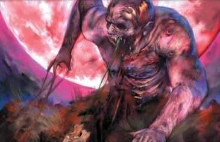 | |
| Ring/Mastery | Earth 1 |
| Range | 100’ |
| Area of Effect | One humanoid corpse |
| Duration | 1 hour |
| Raises | Duration (+1 hour per two Raises), Range (+20’ per Raise), Targets (+1 corpse per Raise) |
| Description | This spell is used by maho-tsukai to quickly bring forth undead warriors to protect themselves or slaughter their enemies. It must be cast on a corpse which is within the spell’s range ; it cannot target a living creature. The corpse will be animated by a kansen, rising up and serving the caster as best it can. Mechanically, the animated corpse is considered a zombie (as per the Book of Void, page 331). It obeys any simple commands (such as "kill them" or "wait here") from the maho-tsukai who summoned it. Complex or conditional orders cannot be understood, and the zombie will simply stand and wait until it is given an order simple enough to understand. Once created, it can move freely beyond the spell’s initial range. If the zombie is beheaded or destroyed, it will not re-animate unless the spell is cast again. At the end of the spell’s duration, the kansen will depart and the undead creature will collapse to the ground, becoming nothing more than a corpse. |
Written in Blood
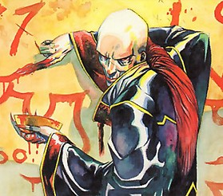 | |
| Ring/Mastery | Fire 1 |
| Range | Touch |
| Area of Effect | One message (up to ten words) |
| Duration | 1 week |
| Raises | Duration (+1 day per Raise), Special (+3 words per Raise) |
| Description | Maho-tsukai use this spell to leave hidden messages, either to communicate with each other or to intimidate others. The message is written in blood onto any flat surface, and may be up to ten words long (Raises can be taken to lengthen the message). When the message is completed, the blood will sink into the surface and disappear, reappearing later when a condition set by the caster is fulfilled. Conditions for the message’s reappearance can be as simple or as complex as the caster might desire, so long as they are conditions the kansen can reasonably perceive (GM’s judgment). Until the message reappears, it is physically undetectable, although spells such as Sense or By the Light of the Moon will detect something magically concealed in the surface. If the spell’s duration expires without the trigger-event taking place, the hidden blood will reappear without forming the message. |
Mastery Level 2
Caress of Fu Leng
| Ring/Mastery | Earth 2 |
| Range | 50’ |
| Area of Effect | One target object |
| Duration | Instantaneous |
| Raises | Range (+10’ per Raise) |
| Description | This spell summons dark kansen to consume and destroy the substance most inimical to them : jade. The caster may target any one jade item, weapon, or object within the spell’s range (he must be able to see it). The jade is instantly corrupted, its blessed properties annihilated by an overwhelming saturation of Taint. Only a foul black slime is left behind. This spell cannot affect an awakened nemuranai (magical relic) that contains jade. |
Curse of the Unblinking Eye
| Ring/Mastery | Air 2 |
| Range | 100’ |
| Area of Effect | One target creature |
| Duration | 2 days |
| Raises | Duration (+1 day per 2 Raises, maximum of 7 days duration), Targets (+1 target per 2 Raises) |
| Description | This spell curses the target with the attentions of malignant Air kansen who prevent him from sleeping. For the duration of the spell, the victim cannot sleep, and thus cannot recover Void points or spell slots from rest. Further, for each day the victim goes without sleep, he must make a Raw Stamina roll at a TN equal to 5 + (5x number of nights without sleep) or suffer the effects of being Fatigued. |
Curse of Weakness
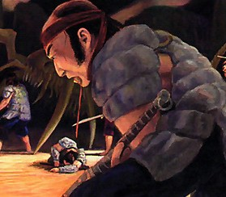 | |
| Ring/Mastery | Water 2 |
| Range | 50’ |
| Area of Effect | One target person or creature |
| Duration | 10 rounds |
| Raises | Duration (+2 rounds per Raise), Range (+10’ per Raise), Targets (+1 target per 2 Raises) |
| Description | A more powerful form of the spell Disrupt Limb, this spell inflicts an overwhelming barrage of angry Water kansen on the target. The kansen flow through his body, inflicting headache, weakness, fatigue, and muscle tremors. For the duration of the spell, he is at a +10 TN penalty to all physical and mental activities that require Skill or Trait rolls. (This includes Spell Casting rolls.) He also suffers a -10 penalty to his Armor TN, as the debilitation makes it difficult for him to dodge blows. |
Dark Wings
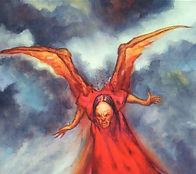 | |
| Ring/Mastery | Water 2 (Maho) |
| Range | Self |
| Area of Effect | Caster |
| Duration | 10 minutes |
| Raises | Duration (+2 minutes per Raise) |
| Description | The caster sprouts monstrous wings from his back, resembling those of a bat or other such creature. For the duration of the spell the caster can fly, and is considered to have Swift 3 while flying. |
Drain the Soul
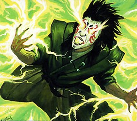 | |
| Ring/Mastery | Earth 2 |
| Range | 50’ |
| Area of Effect | One target person/creature |
| Duration | 10 minutes |
| Raises | Duration (+2 minutes per Raise), Range (+10’ per Raise), Targets (+1 target per Raise), Special (+1 Stamina rank per 2 Raises) |
| Description | This spell causes malignant Earth kansen to afflict the target, draining away his natural Earth and leaving him weak and sickly. For the duration of the spell, the victim’s Stamina rank is reduced by 1 (to a minimum of 1). This can cause the victim’s Earth Ring to temporarily drop, reducing his Wound Ranks and making him more vulnerable to injury. |
Pain
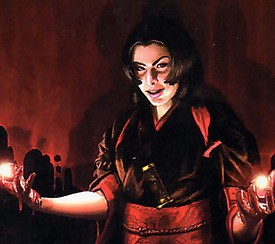 | |
| Ring/Mastery | Earth 2 |
| Range | 30’ |
| Area of Effect | One target creature |
| Duration | 1 round |
| Raises | Duration (+1 Round per Raises), Range (+5’ per Raise), Targets (+1 target per 2 Raises) |
| Description | This spell wracks the target with intense physical pain, shooting up and down the limbs and through the torso. The target falls Prone, helpless with pain, and cannot act on his next Turn. In addition, the target must make a Willpower Trait Roll at TN 20 to avoid crying aloud in pain, which could cause a loss of Honor and/or Glory. |
Puppet Master
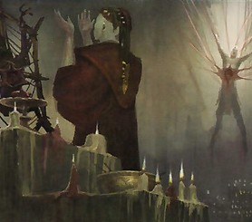 | |
| Ring/Mastery | Fire 2 |
| Range | 100’ |
| Area of Effect | One target undead creature |
| Duration | 4 hours |
| Raises | Duration (+2 hours per Raise), Range (+20’ per Raise), Targets (+1 undead creature per Raise) |
| Description | This spell allows a maho-tsukai to exert his will against any undead creatures in the area, taking control of them and forcing them to obey his will. If the spell targets a mindless uncontrolled creature such as a zombie, the caster takes control of it automatically. If the spell targets a free-willed undead creature such as a pennaggalon, the caster must succeed in a Contested Willpower roll against the creature. Likewise, if the spell targets an undead creature controlled by someone else (another maho-tsukai, Oni lord, etc), the caster must succeed in a Contested Willpower roll against the controller. Once controlled, the undead will obey the caster’s commands for the duration of the spell, subject to the limits of the creature’s intelligence. Zombies will typically only be able to comprehend the most basic of orders ("kill him", etc). At the end of the spell’s duration, the undead either revert to the control of their previous master (if they had one) or become free-willed once more. |
Spreading the Darkness
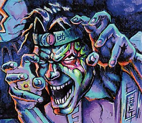 | |
| Ring/Mastery | Earth 2 |
| Range | 30’ |
| Area of Effect | Two target persons |
| Duration | Permanent |
| Raises | Range (+10’ per Raise) |
| Description | This sinister curse is employed by maho-tsukai both to control their own Taint and to spread the gift of Jigoku to others. The spell targets two people, at least one of which must have the Shadowlands Taint. The spell causes some of this Taint to leave that creature and transfer to the other, the kansen gleefully carrying the gift of Jigoku from one creature to the other. The maximum number of Taint points which can be moved in this manner is equal to the caster’s Earth + Insight Rank ; however, it can never remove the last point of Taint from the target. (Once the Taint has its grip on someone, it is supremely unwilling to let go.) If the person receiving the Taint is an unwilling target, the caster must succeed in a Contested Willpower roll against the target, or the spell fails. |
Mastery Level 3
Armor of Obsidian
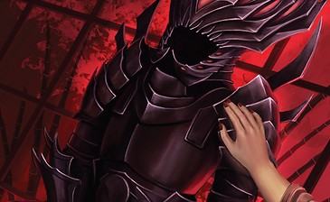 | |
| Ring/Mastery | Fire 3 |
| Range | Touch |
| Area of Effect | One target person or creature (can be caster) |
| Duration | 10 minutes or until used |
| Raises | Duration (+5 minutes per Raise), Special (absorb one additional spell per 2 Raises) |
| Description | This spell wreaths the target in an invisible shield of kansen. If the target is struck or affected by a spell with the Jade keyword, the kansen intercede and negate the spell’s effect. This is quite spectacular, as the target is briefly wreathed in a cloud of black, soundless fire which visibly absorbs and consumes the spell. The magical armor normally only works once, although a skilled maho-tsukai can make it strong enough to withstand multiple spells. |
Death beyond Life
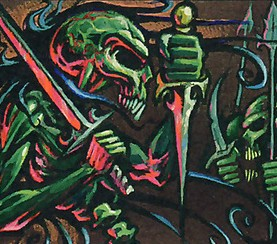 | |
| Ring/Mastery | Earth 3 |
| Range | Touch |
| Area of Effect | One target person |
| Duration | 24 hours |
| Raises | Duration (+24 hours per Raise) |
| Description | This spell is among the most secret spells employed by the leaders of the Bloodspeaker cult, and is quite rare among maho-tsukai outside of that elite group. It allows the caster to literally cheat death, for himself or another person. The spell must be cast on its target while still alive, and its protective effect normally lasts 24 hours, although skilled spellcasters can extend it. If the target dies within the duration of the spell, powerful kansen will carry his soul away, preventing it from passing on to Meido for judgment. Exactly eight hours after death, they will bring back the soul and re-infuse it into the body, and the target rises from the dead at the Down Wound Rank. Returning from the dead in this way inflicts a full Rank of Taint on the target, due to his soul having been in the care of kansen for eight hours. This blasphemous resurrection will work as long as the target’s corpse is still intact ; even if limbs have been lost or the head severed, the body will reassemble itself when the kansen return. The only way to prevent the resurrection is to scatter the body parts or burn the corpse to ashes. |
Essence of Undeath
| Ring/Mastery | Earth 3 |
| Range | 50’ |
| Area of Effect | One humanoid corpse |
| Duration | Indefinite |
| Raises | Range (+20’ per Raise), Targets (+1 target per 3 Raises) |
| Description | A more powerful form of undead summoning, this spell animates a dead corpse into an undead warrior. Unlike the minor, temporary zombies created by "Summon Undead Champion", this spell binds a kansen into a dead body, creating a powerful Tainted revenant which serves the caster to the best of its ability. The revenant will last indefinitely (until destroyed), and the Taint infusing its body prevents it from decaying further. It cannot speak, but can understand and obey any verbal command. It will serve the maho-tsukai who summoned it until it is physically destroyed. |
Hate's Heart
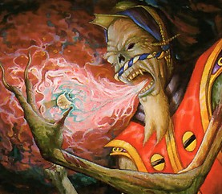 | |
| Ring/Mastery | Air 3 |
| Range | 50’ |
| Area of Effect | One target creature |
| Duration | 3 rounds |
| Raises | Duration (+1 round per 2 Raises), Range (+10’ per Raise) |
| Description | The target of this spell is infused with Air kansen which cause him to suffer a sudden, violent, murderous rage against whoever he is looking at or speaking with when the spell takes effect. (Cunning maho-tsukai usually cast this spell from concealment, to avoid the risk that the rage might be directed against them.) For the duration of the spell, the victim will be consumed with murderous, uncontrollable rage, unable to think of anything but killing this person. He will immediately attack the object of his hatred to the very best of his ability. At the start of each Turn, the victim may roll his Honor at TN 30 to control the rage for that Round. The victim will only be able to take Free and Simple Actions during that Round, since so much of his energy is dedicated to controlling the anger. |
Summon Oni
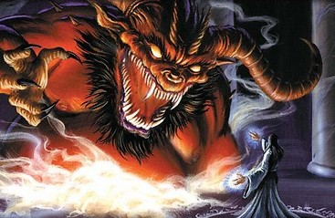 | |
| Ring/Mastery | Earth 3 |
| Range | 50’ |
| Area of Effect | One summoned oni |
| Duration | Indefinite |
| Raises | Special (+1k0 per Raise to the Willpower roll to control the oni), Special (more powerful oni, GM’s discretion) |
| Description | Among the most hazardous spells in the maho-tsukai’s repertoire, this spell summons forth an oni from Jigoku. The oni appears anywhere the caster desires within the range of the spell, and must immediately be given a name - either the caster’s own name or the name of another person closely connected to the caster (a close friend, immediate blood relative, or someone who owes the caster their life) - or it will simply depart back to Jigoku. A name, however, anchors the oni into Ningen-do and allows it to remain within the mortal realm. Once the caster has given the oni a name he must engage in a Contested Willpower roll against it. If the caster gave the oni his own name, he gains a +3k2 bonus to this roll. The caster may also Raise when casting Summon Oni to gain additional unkept dice on this roll. The GM should determine the Willpower of the oni : the more powerful the oni, the higher its Willpower. If the caster wins the roll, the oni will obey his commands (at least for now). If the oni wins the roll, however, it is free of control and typically runs amok until it is destroyed. Naming an oni is a perilous business, for the oni will try to steal the name away and thereby gain full autonomy and the ability to remain in the mortal realm. Such creatures become Oni Lords, monstrously powerful, able to spawn lesser but still potent copies of themselves. Thus summoned oni will typically not immediately attack the persons who gave them names, seeking instead to leave them alive until they can steal the names completely. Any person who shares their name with an oni will acquire an Oni Mark, a small discoloration on the skin. Every day the bearer of an Oni Mark must make an Earth roll to resist gaining the Shadowlands Taint as the connection to the oni corrupts them (see the Taint rules for more details). Each week they must make another Contested Willpower Roll, similar to the first, against the oni in order to avoid surrendering their name to it. The oni gains +1k1 to this roll for each Rank of Shadowlands Taint the Mark has inflicted on its bearer. If the name-bearer is the same person who summoned the oni, he continues to gain the +3k2 bonus to the roll, plus any bonuses from Raises on the original spell. If the oni ever wins this roll it steals the victim’s name and becomes an Oni Lord, freeing itself from any control by its summoner (even if that person is different from the one with the Oni Mark). The now-nameless victim of the Oni Mark becomes a slave of the oni and must obey its commands. If the oni is destroyed or otherwise banished back to Jigoku, it loses its connection to the person with its name and the Oni Mark disappears. |
Symbol of the Bloodspeaker
| Ring/Mastery | Air 3 (Wards) |
| Range | Touch |
| Area of Effect | 50’ radius |
| Duration | 12 hours |
| Raises | None |
| Description | The Bloodspeaker Cult uses this spell to protect their meeting places against unwanted intrusion. The symbol must be inscribed into a flat surface (wall, floor, etc) when it is cast. The moment anyone who is not a loyal member of the Bloodspeaker Cult enters the symbol’s radius, the symbol glows a bright sickly green and the intruder is bathed in eerie green flames, inflicting 4k3 damage. The symbol can discharge any number of times against different targets, but each target can only be affected once within the duration of the spell. |
Mastery Level 4
Chains of Jigoku
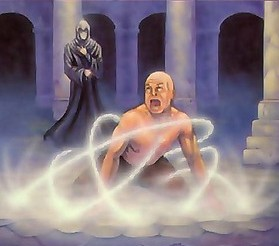 | |
| Ring/Mastery | Earth 4 |
| Range | 50’ |
| Area of Effect | One creature or person |
| Duration | 10 minutes |
| Raises | Duration (+5 minutes per Raise), Range (+10’ per Raise), Special (+1k0 per Raise to caster’s roll to contain the prisoner) |
| Description | A dark counterpoint to the binding spells practiced by Earth shugenja, this spell summons the kansen to bind and trap living creatures (it cannot affect the undead). When the spell is cast, manacles of dark, rusty iron burst from the ground and ensnare the target, trapping him and holding him in place. The target is rendered immobile and helpless, unable to take any physical actions other than to try to break free (although he can still speak). The victim can only break free by making a Contested Roll of his Strength against the Earth of the mahotsukai who cast the spell. (The caster may take Raises to gain additional unkept dice on this roll.) When the spell expires, the manacles melt away into a disgusting black ooze. |
No Pure Breaths
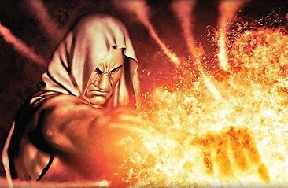 | |
| Ring/Mastery | Air 4 |
| Range | 100’ |
| Area of Effect | One target creature |
| Duration | Instantaneous (but see below) |
| Raises | Damage (+1k0 per Raise), Range (+20’ per Raise), Targets (+1 target per 2 Raises) |
| Description | One of the more fearsome maho spells, No Pure Breaths instantly turns the air inside the target’s lungs to Tainted kansen which violently erupt out of the body, ravaging the lungs and airways, leaving the victim bleeding from the nose, mouth, and ears. The spell has a DR equal to the victim’s Air Ring in kept dice, but in addition, the effects of the spell leave the lungs and throat so ravaged that breathing itself becomes intensely painful. The victim suffers a continuous +10 TN penalty to all actions. This effect cannot be ended naturally, even if the damage is healed ; however, any kind of magical healing spell, Kiho, or other supernatural healing effect will restore the lungs and end the TN penalty. |
Stealing the Soul
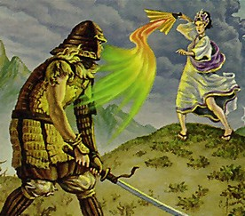 | |
| Ring/Mastery | Earth 4 |
| Range | 1 mile |
| Area of Effect | One target person |
| Duration | 1 day |
| Raises | Special (+1 additional Rank of Trait drain per 2 Raises) |
| Description | Unlike most maho spells, this one can be cast as a ritual, allowing multiple casters to participate. The Bloodspeaker Cult is especially infamous for using this spell to weaken and cripple their enemies. In order to cast this spell, the maho-tsukai must possess some kind of fetish or token of the intended target : a lock of hair, drop of blood, a personal item, etc. The spell inflicts a hostile and predatory kansen on the target, forcibly draining away his mental or physical abilities. The victim loses 1 Rank from a Trait of the caster’s choice. Additional Ranks may be drained by taking Raises, but the Trait cannot be reduced below Rank 1. For each additional maho-tsukai participating in the spell, an additional Trait can be drained by the same amount. If this spell reduces the target’s Earth Ring, it will also lower his Wounds at each Rank, possibly resulting in death if he has suffered damage. |
Truth is a Scourge
| Ring/Mastery | Air 4 |
| Range | 50’ |
| Area of Effect | One target person |
| Duration | 10 minutes |
| Raises | Duration (+2 minutes per Raise), Range (+10’ per Raise), Targets (+1 per Raise) |
| Description | One of the more subtle and psychologically destructive spells in the maho-tsukai’s arsenal, this spell causes a kansen to distort the target’s thoughts, making it impossible for him to lie. Regardless of what he might intend to say, the target of this spell will find himself telling the truth, no matter how damaging that truth might be to himself, his family and lord, or his Clan. In fact, he will find himself blurting out any dangerous or damaging secrets he possesses. In order to conceal the truth while under the effects of this spell, the target must make a Willpower roll at TN 30. |
Mastery Level 5
Possession
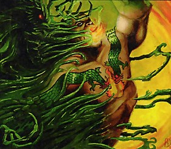 | |
| Ring/Mastery | Air 5 |
| Range | 100’ |
| Area of Effect | One target person |
| Duration | 1 day |
| Raises | Duration (+1 day per 2 Raises), Range (+25’ per Raise), Special (+1k0 on Contested Willpower Roll per Raise) |
| Description | This fearsome spell allows the maho-tsukai to take direct possession of another person, forcing his soul into the victim’s body and controlling it like a puppet. The caster must know the name of his chosen victim and must also have either a drop of blood or a piece of hair from the target. Once the spell is cast, the maho-tsukai must make a Contested Willpower Roll against the target. (The caster may take Raises to gain unkept dice on this roll.) If the target wins the roll, the possession fails, and the caster suffers 2k1 Wounds as the angry kansen lash back at the one who summoned them. If the caster wins the roll, he takes complete possession of the victim’s body and may use it as he sees fit. He does not, however, gain any of the possessed body’s memories, knowledge, or instincts. In mechanical terms, the possessed body has its own physical Traits and physical Advantages but has the mental Traits, mental/spiritual Advantages, School Techniques, and Skills of the possessing maho-tsukai. The spell’s victim experiences what is happening to him in an eerie, dream-like manner. When the spell’s duration ends, the caster’s soul returns to his own body, and the victim regains control of himself and must face the consequences of what he did while possessed. While the possession lasts, the caster’s body is in a comatose state. He can end the possession early and return to his own body at will. If the possessed body is killed, he will immediately return to his own body. If his own body is killed while he possesses another, he will have no place to return when the spell expires and will thus die the moment the spell’s duration ends. |
Strength of Darkness
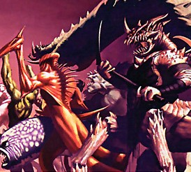 | |
| Ring/Mastery | Fire 5 |
| Range | Personal / Touch |
| Area of Effect | One target person |
| Duration | 10 rounds |
| Raises | Duration (+1 Round per Raise), Special (+1 Rank to one physical Trait for every 2 Raises) |
| Description | This spell infuses the body of the target with the power of the Taint, unnaturally enhancing his physical prowess for a short time, allowing him to perform superhuman feats of speed, strength, and stamina. The recipient of the spell gains +1 Rank to his Earth Ring and his other three physical Traits for the duration of the spell. (The caster may Raise to increase the Traits, but the Earth Ring cannot be increased further.) He also gains the ability to see through any sort of visual impairment : fog, smoke, or even complete darkness. The physical evidence of this magical enhancement is obvious and grotesque : the target’s flesh swells and bulges unnaturally and his eyes turn blood-red. This spell increases the target’s Wounds per Rank to match his enhanced Earth Rank. When the spell expires and the Earth Ring drops back to normal, the target’s Wounds also return to normal levels. This can result in death if he has suffered serious damage while under the spell’s effects. |
Touch of Death
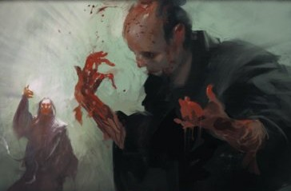 | |
| Ring/Mastery | Earth 5 |
| Range | 50’ |
| Area of Effect | One target creature |
| Duration | Instantaneous |
| Raises | Range (+10’ per Raise), Targets (+1 target per 2 Raises) |
| Description | The most dreaded of all maho spells, the Touch of Death ages, blackens, and blights the target. Skin and flesh shrivel and blacken, hair turns gray and falls out, and shattering pains wrack the body. The victim physically ages by 10 years, and suffers 7k7 Wounds. The wounds can be healed normally, but the aging cannot be reversed. A character unfortunate enough to be hit by this spell multiple times (and survive) will be left elderly and decrepit. |